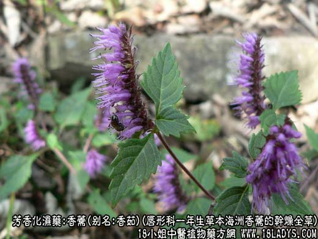
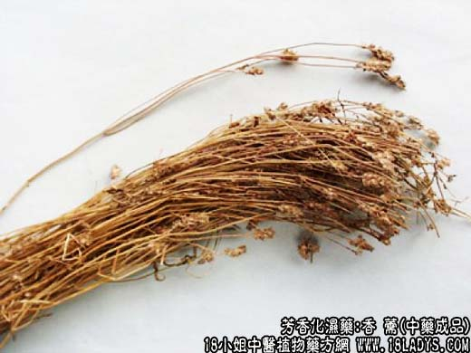
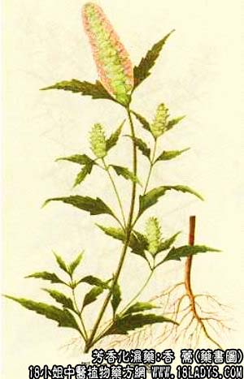

香薷为较长用中药，始载《名医别录》，列为中品。
别名：江香薷，香茹。
来源：为唇形科一年生草本植物，海洲香薷的干燥全草，野生或栽培。
产地：海州香薷，中南、华东、西南、西北等地均产。
华荠宁，分布于江南各省，主产于广西，湖北、湖南等省，多为野生。
性状鉴别：海州香薷为带根或不带根的全草，长30~50厘米，直径约1~3毫米，茎略方形，稍呈波状，弯曲。茎基部深褐色或黄褐色，中上部紫色或淡黄绿色。分枝及叶为对生。叶长卵形，边缘有疏锯齿。叶稀疏，多已脱落。顶端常带有穗状花序残留的花萼，花萼兜状五裂。全株披有白色短毛茸、茎质脆易折。断面白色，有松泡髓心。气香、味微辛凉、略麻舌。
以茎细长，花穗多，香味浓者为佳。
石荠宁茎较海州香薷矮细，长不及30厘米，直径约1毫米，上部略方形，而稍作波状弯曲，有分枝，基部紫红色，上部灰绿色。叶对生，披针形灰绿色，多皱缩或脱落。多无花。全体披白色毛茸，气香，味辛凉而微有灼感。
主要成分：含挥发油，其中主要成分为香薷酮、倍半萜烯等。
药理作用：发汗解热，利尿。
性味：辛，微温。
归经：肺、脾、胃经。
功能：发汗解暑，和中利湿。
主治：伤暑，形寒无汗，腹痛吐泻，水肿，脚气。
临床应用：主要用作夏令的解表药，故前人有谓“夏月之用香薷，犹冬月之用麻黄：。
1、用于治疗夏季因感寒或暑湿（例如受凉或饮食生冷不洁食物等因素影响）而出现的外感，表现有恶寒、发热、无汗、腹痛、吐泻者（相当于胃肠感冒，或急性胃肠炎），治疗方剂中香薷为最常用之药，常配厚朴、炒扁豆，以加强祛湿功能，方入香薷饮。但有“阳暑”证候者（汗多、大渴、高热）不宜用香薷。
2、用于治疗脚气水肿和肾炎水肿，取其用利尿消肿作用，不过效力较小，且须配茯苓、白术等。
3、用于辟除口臭，取其气味清香。可用香薷9g，水煎含漱。
香薷煎汤热服，容易引起吐呕，故宜冷服；或配用杏仁、黄芩、黄连等药，也可免除呕吐的副作用。
用于解表时，水煎宜较速；用于消肿时，宜久煎浓缩服用。
用量：3~9g。
处方举例：香薷饮（《局方》）：香薷4.5g，厚朴6g，炒扁豆18g，水煎服。
注：香薷主要为本文所列的两种，前者称白花香薷，后者称青香薷；无花香薷，主销全国多数地区，京津两者同等药用。此外，甘肃、四川、云南、贵州则以同植物“牛至”的干燥全草作香薷用，本品在江西称白花茵陈，主销出口，特征是茎四棱形，被白色柔毛，叶对生，卵圆形，全缘或偶有锯齿，两面有油点。多不具花，气香，味辛凉。
新疆产销的为萼果香薷。